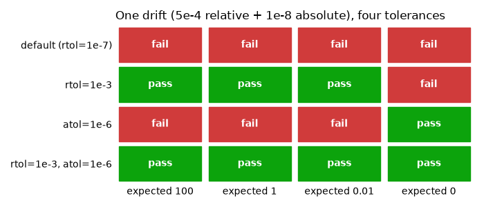

Note
Go to the end to download the full example code.
ToleranceConfig : replaying within tolerances¶
Floating point results drift: a BLAS update, a different summation order, a new CPU.
ToleranceConfig decides how much drift is noise and how much is a regression, and
replay applies it when it compares a replayed call with its record.
It applies to values only. Which function and which arguments a record replays is never approximate.
Setup: where records go¶
The code under test reads its store from the REGRESSION_RECORDS_STORE environment
variable when it is imported, so the variable is set first
(record_func : recording a first call says why).
import os
import tempfile
from pathlib import Path
# In a project: REGRESSION_RECORDS_STORE=tests/regression_data in a .env file, loaded
# with python-dotenv's load_dotenv(). Here: a fresh temporary directory, empty each run.
STORE = Path(tempfile.mkdtemp(prefix="regression-records-"))
os.environ["REGRESSION_RECORDS_STORE"] = str(STORE)
print("store:", STORE)
store: /tmp/regression-records-ardv1pq8
Setup: the code under test¶
Replay imports a recorded function by module and name, so the code under test lives in
a module, sampling, imported from regression_records._examples - support code
that ships with the package so that a page can import real code rather than define it
in a cell (record_func : recording a first call says more). In
your project, this is your own package. Its source, printed below:
It holds two recorded functions: simulate, a Monte Carlo estimate, and tally,
a currency total that should be exact. Its DRIFT setting perturbs every float they
return, standing in for the noise a new BLAS, CPU or numpy brings.
import inspect
from regression_records._examples import sampling
print(inspect.getsource(sampling))
"""A Monte Carlo estimate and an exact total, for the gallery page ``03_tolerance``."""
from __future__ import annotations
import os
import numpy as np
from regression_records import record_func
# Where records go is configuration, set by whoever runs this code; never set here.
STORE = os.environ["REGRESSION_RECORDS_STORE"]
DRIFT = 0.0 # relative perturbation applied to every float result
@record_func(STORE)
def simulate(seed: int) -> dict:
"""Return four standard normal draws from ``seed``, and a Monte Carlo estimate."""
rng = np.random.default_rng(seed)
draws = rng.normal(size=1000)
return {
"draws": draws[:4] * (1 + DRIFT),
"estimate": float(np.abs(draws).mean()) * (1 + DRIFT),
"seed": seed,
}
@record_func(STORE)
def tally(amounts: list[float]) -> dict:
"""Return the total of ``amounts`` in currency, which should be exact."""
return {"total": float(np.sum(amounts)) * (1 + DRIFT), "count": len(amounts)}
import numpy as np
from regression_records import (
ComparisonResult,
ReplayReport,
ToleranceConfig,
compare,
enable,
replay,
)
def show_result(result: ComparisonResult) -> None:
"""Print a comparison result: its summary, then the tolerance each diff failed."""
print(result.summary())
for diff in result.diffs:
if diff.tolerance_used is not None:
print(f" {diff.path}: {diff.tolerance_used}")
def show_cases(report: ReplayReport) -> None:
"""Print one line per replayed record: its status and function."""
for case in report.cases:
print(f" {case.status.value:<8} {case.name} record {case.record_id[:8]}")
compare() on its own¶
compare() is a pure function - it never raises, and it is the same code path
replay uses. That makes it the quickest way to see what a tolerance actually does.
The default is rtol=1e-7, atol=0.0: two values are close when
abs(actual - expected) <= atol + rtol * abs(expected), the same rule as
numpy.isclose.
assert compare(1.0, 1.000000001).passed, "1e-9 relative drift is within the default"
assert not compare(1.0, 1.001).passed, "1e-3 relative drift is not"
Loosen it when the drift is expected:
loose = ToleranceConfig(rtol=1e-2)
assert compare(1.0, 1.001, loose).passed, "1e-3 drift is within rtol=1e-2"
atol is for values near zero¶
rtol is a fraction of the expected value, so it collapses to nothing as the expected
value approaches zero: no relative tolerance makes 0.0 and 1e-12 close. atol is
the absolute floor that does.
assert not compare(0.0, 1e-12, ToleranceConfig(rtol=1e-2)).passed
assert compare(0.0, 1e-12, ToleranceConfig(atol=1e-9)).passed
The two rules side by side¶
One drift, four settings. Each value below moved by a relative 5e-4 plus an
absolute 1e-8 - the kind of noise a library upgrade brings - and each cell is
compare()’s verdict on one value under one setting. rtol forgives the large
values and fails the zero; atol forgives the zero and fails everything that has a
scale; together they pass the lot.
import matplotlib.pyplot as plt
expected_values = np.array([100.0, 1.0, 0.01, 0.0])
drifted_values = expected_values * (1 + 5e-4) + 1e-8
settings = {
"default (rtol=1e-7)": ToleranceConfig(),
"rtol=1e-3": ToleranceConfig(rtol=1e-3),
"atol=1e-6": ToleranceConfig(atol=1e-6),
"rtol=1e-3, atol=1e-6": ToleranceConfig(rtol=1e-3, atol=1e-6),
}
verdicts = np.array(
[
[
compare(e, a, cfg).passed
for e, a in zip(expected_values, drifted_values, strict=True)
]
for cfg in settings.values()
]
)
assert verdicts.tolist() == [
[False, False, False, False],
[True, True, True, False],
[False, False, False, True],
[True, True, True, True],
]
fig, ax = plt.subplots(figsize=(7.0, 3.0))
for row, passed_row in enumerate(verdicts):
for col, passed in enumerate(passed_row):
ax.add_patch(
plt.Rectangle(
(col + 0.04, row + 0.06),
0.92,
0.88,
color="#0ca30c" if passed else "#d03b3b",
)
)
ax.text(
col + 0.5,
row + 0.5,
"pass" if passed else "fail",
ha="center",
va="center",
color="white",
fontweight="bold",
)
ax.set_xlim(0, verdicts.shape[1])
ax.set_ylim(verdicts.shape[0], 0)
ax.set_xticks(np.arange(verdicts.shape[1]) + 0.5)
ax.set_xticklabels([f"expected {v:g}" for v in expected_values])
ax.set_yticks(np.arange(verdicts.shape[0]) + 0.5)
ax.set_yticklabels(list(settings))
ax.tick_params(length=0)
ax.grid(False)
for spine in ax.spines.values():
spine.set_visible(False)
ax.set_title("One drift (5e-4 relative + 1e-8 absolute), four tolerances", loc="left")
fig.tight_layout()

NaN, infinity, and dtype¶
equal_nan=True(the default) treats NaN in the same position on both sides as equal. Recorded output is full of NaN in practice, and NaN != NaN would fail every time.Infinities compare exactly -
infandinfmatch,infand1e308do not, whatever the tolerance.strict_dtype=True(the default) makes an array’s dtype part of the comparison. A result that quietly becamefloat32, or an integer column that became floats, is a real change even when the numbers print the same.
nan_pair = (np.array([1.0, np.nan]), np.array([1.0, np.nan]))
assert compare(*nan_pair).passed, "NaN equals NaN by default"
assert not compare(*nan_pair, ToleranceConfig(equal_nan=False)).passed
show_result(compare(np.array([1.0, 2.0]), np.array([1.0, 2.0], dtype=np.float32)))
print()
print(
"same, strict_dtype=False:",
compare(
np.array([1.0, 2.0]),
np.array([1.0, 2.0], dtype=np.float32),
ToleranceConfig(strict_dtype=False),
).passed,
)
comparison failed with 1 diff(s):
at '$' (dtype_mismatch): array dtype float32 != expected float64
same, strict_dtype=False: True
Per-path overrides¶
One tolerance for a whole result is usually too blunt: a Monte Carlo estimate needs
room, an identifier alongside it needs none. path_overrides maps a path prefix to its
own config, and the longest matching prefix wins. An override changes only the fields
it is given and inherits the rest from the config above it, so the estimate override
below keeps the parent’s atol, equal_nan and strict_dtype.
The keys use the same path grammar the diffs report - $.output for the return value,
.key for a mapping entry, [0] for a sequence element, ['price'] for a dataframe
column.
tolerance = ToleranceConfig(
rtol=1e-9, # strict by default
path_overrides={
"$.output.estimate": ToleranceConfig(rtol=0.05), # 5% is fine here
},
)
expected = {"estimate": 100.0, "count": 1000.0}
actual = {"estimate": 103.0, "count": 1000.0001}
show_result(compare(expected, actual, tolerance, root="$.output"))
comparison failed with 1 diff(s):
at '$.output.count' (value_mismatch): 1000.0001 differs from expected 1000.0 beyond tolerance
$.output.count: ToleranceInfo(rtol=1e-09, atol=0.0, max_abs_diff=9.999999997489795e-05)
The 3% move in estimate passed under its override; the far smaller move in count
failed against the strict default. Note the reported rtol on the diff is the one
actually applied, so a surprising pass or fail says which rule judged it.
Recording a baseline¶
Back to the recorded functions from the setup. Recording is off unless switched on; this page switches it on for the rest of the script.
enable()
sampling.simulate(7)
sampling.simulate(11)
sampling.tally([19.99, 5.01, 100.0])
def replay_with_drift(drift, **replay_kwargs):
"""Replay the store while every float result is perturbed by ``drift``."""
sampling.DRIFT = drift
try:
return replay(STORE, **replay_kwargs)
finally:
sampling.DRIFT = 0.0
One tolerance for the whole replay¶
A relative drift of 1e-5 fails the default rtol=1e-7 everywhere. Passed as
tolerance=, a looser config forgives it.
strict = replay_with_drift(1e-5)
show_cases(strict)
assert strict.counts()["differs"] == 3
print()
loose = replay_with_drift(1e-5, tolerance=ToleranceConfig(rtol=1e-3))
show_cases(loose)
assert loose.passed
differs regression_records._examples.sampling:simulate record e4f2de6a
differs regression_records._examples.sampling:simulate record dd695600
differs regression_records._examples.sampling:tally record 2d92d48d
passed regression_records._examples.sampling:simulate record e4f2de6a
passed regression_records._examples.sampling:simulate record dd695600
passed regression_records._examples.sampling:tally record 2d92d48d
The tolerance belongs to the replay, not to the recording. The records hold values; how closely a later run must reproduce them is decided when it runs, so the same store can be checked strictly on the machine that recorded it and loosely elsewhere.
Per function: tolerance_overrides¶
rtol=1e-3 is right for a Monte Carlo estimate and wrong for a currency total.
tolerance_overrides maps a glob on "module:qualname" to its own config; the
first pattern that matches wins, and every other function gets tolerance.
report = replay_with_drift(
1e-5,
tolerance=ToleranceConfig(rtol=1e-9),
tolerance_overrides={f"{sampling.__name__}:sim*": ToleranceConfig(rtol=1e-3)},
)
show_cases(report)
assert [c.name for c in report.failures] == [f"{sampling.__name__}:tally"]
print()
print(report.failures[0].describe())
passed regression_records._examples.sampling:simulate record e4f2de6a
passed regression_records._examples.sampling:simulate record dd695600
differs regression_records._examples.sampling:tally record 2d92d48d
differs: regression_records._examples.sampling:tally record 2d92d48d (regression_records/_examples/sampling/tally/records/rec-ff4e7a221ae951d0-2d92d48d.json)
comparison failed with 1 diff(s):
at '$.output.total' (value_mismatch): 125.00125000000001 differs from expected 125.0 beyond tolerance
simulate passed under its override; tally was judged by the strict default and
its drifted total is reported. count is an integer and is not mentioned: integers
always compare exactly, whatever the tolerance.
Per value: path_overrides on replay¶
The two layers combine. tolerance_overrides picks a config per function, and that
config’s path_overrides pick values within the function’s result. Here only the
estimate is loose; the draws inherit the strict rtol=1e-9 and fail.
report = replay_with_drift(
1e-5,
tolerance=ToleranceConfig(rtol=1e-9),
tolerance_overrides={
f"{sampling.__name__}:simulate": ToleranceConfig(
rtol=1e-9, path_overrides={"$.output.estimate": ToleranceConfig(rtol=1e-3)}
)
},
)
simulate_case = next(
c for c in report.failures if c.name == f"{sampling.__name__}:simulate"
)
show_result(simulate_case.comparison)
assert [d.path for d in simulate_case.comparison.diffs] == ["$.output.draws"]
comparison failed with 1 diff(s):
at '$.output.draws' (value_mismatch): 4 of 4 element(s) differ beyond tolerance at index/indices: 0, 1, 2, 3
$.output.draws: ToleranceInfo(rtol=1e-09, atol=0.0, max_abs_diff=8.905918387647205e-06)
A real change¶
Drift of 50% is not noise. Even the loosest config above reports it.
report = replay_with_drift(0.5, tolerance=ToleranceConfig(rtol=1e-3))
print(report.summary(max_diffs=2))
assert report.counts()["differs"] == 3
replayed 3 record(s) from /tmp/regression-records-ardv1pq8: 3 differs
differs: regression_records._examples.sampling:simulate record e4f2de6a (regression_records/_examples/sampling/simulate/records/rec-8bcbc2617d9fca49-e4f2de6a.json)
comparison failed with 2 diff(s):
at '$.output.draws' (value_mismatch): 4 of 4 element(s) differ beyond tolerance at index/indices: 0, 1, 2, 3
at '$.output.estimate' (value_mismatch): 1.1157553730290233 differs from expected 0.7438369153526821 beyond tolerance
differs: regression_records._examples.sampling:simulate record dd695600 (regression_records/_examples/sampling/simulate/records/rec-b8e5d75f8cc44b06-dd695600.json)
comparison failed with 2 diff(s):
at '$.output.draws' (value_mismatch): 4 of 4 element(s) differ beyond tolerance at index/indices: 0, 1, 2, 3
at '$.output.estimate' (value_mismatch): 1.2034796483351804 differs from expected 0.8023197655567869 beyond tolerance
differs: regression_records._examples.sampling:tally record 2d92d48d (regression_records/_examples/sampling/tally/records/rec-ff4e7a221ae951d0-2d92d48d.json)
comparison failed with 1 diff(s):
at '$.output.total' (value_mismatch): 187.5 differs from expected 125.0 beyond tolerance
The perturbation inside the tolerance passed silently; the one outside it failed. That
is the whole job of tolerance: draw the line between the drift you have decided not
to care about and the change you want to hear about.
One caution. A tolerance loose enough to hide the noise is also loose enough to hide a small real regression, and it is easier to widen a tolerance than to explain later why a suite stopped catching things. Prefer a tight default with narrow overrides - per function, then per path - where they are earned.
Next: REGRESSION_RECORDS : switching recording on and off - when recording is on, and when it is not.
Total running time of the script: (0 minutes 0.121 seconds)